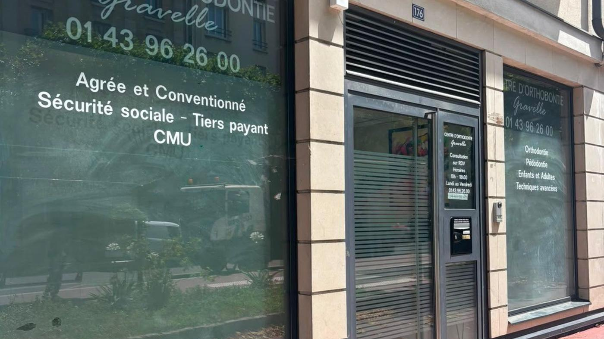

Orthodontiste à Saint-Maurice
Le Centre d'Orthodontie Gravelle accueille les habitants de Saint-Maurice (94410) à Charenton-le-Pont, commune voisine, au 176 Rue de Paris.
Le centre est à Charenton-le-Pont, commune limitrophe
Saint-Maurice et Charenton-le-Pont se touchent le long de la Marne. Le Centre d'Orthodontie Gravelle, 176 Rue de Paris, 94220 Charenton-le-Pont, est un centre de santé dentaire. Il n'est pas situé à Saint-Maurice.
Les Dr Jessica Marciano et Dr Marie-Hélène Rit-Guyomard y reçoivent des enfants, des adolescents et des adultes. Le bilan, la radiologie lorsqu'elle est indiquée et les contrôles ont lieu au même endroit.

Le centre et la prise en charge
Saint-Maurice et Charenton-le-Pont sont limitrophes. Un suivi d'orthodontie comporte des rendez-vous répétés. Le centre est au 176 Rue de Paris, 94220 Charenton-le-Pont.
Deux praticiennes y exercent. Le centre dispose d'une radiologie panoramique. Il est agréé Sécurité sociale : tiers payant et Complémentaire santé solidaire (CMU) pour l'orthodontie concernée. Les horaires vont du lundi au vendredi, sur rendez-vous.
Le déroulement du traitement, les modalités de remboursement et les conseils pour vivre avec un appareil sont décrits sur le site. Les aligneurs invisibles ne sont envisagés qu'après examen.
Métro, bus, parking
Le cabinet est au 176 Rue de Paris, 94220 Charenton-le-Pont. La station la plus proche est Liberté (ligne 8), à environ 450 m. Charenton-Écoles (ligne 8) est à environ 1,2 km. Depuis Saint-Maurice, beaucoup de patients viennent aussi à pied ou à vélo : la limite communale est immédiate.
En bus, les lignes 24, 180, 325 et 111 desservent le secteur. En voiture, la rue de Paris traverse Charenton ; un stationnement de voirie est généralement possible dans les rues adjacentes (places payantes selon le secteur). Le cabinet ne dispose pas d'un parking privé : prévoyez quelques minutes pour vous garer, surtout aux heures de sortie d'école.
Horaires, plan et prise de rendez-vous : voir la page Contact.
Enfants, adultes et aligneurs
Orthodontie des enfants, des adolescents et des adultes.
Enfants & ados
Dépistage dès 4 ans, appareils fixes ou amovibles. Les explications sont données aux parents et à l'enfant.
Orthodontie enfants & ados →Adultes
Orthodontie chez l'adulte : appareils fixes ou gouttières transparentes, selon le bilan.
Orthodontie adulte →Aligneurs invisibles
Gouttières transparentes amovibles, après un bilan au centre.
Aligneurs invisibles →Le Dr Jessica Marciano propose aussi des soins esthétiques médicaux (acide hyaluronique, peeling, hydrofacial) au même cabinet. Accès, horaires et plan : page contact.
Vos questions
Y a-t-il un orthodontiste à Saint-Maurice (94410) ?
Le Centre d'Orthodontie Gravelle n'est pas situé dans Saint-Maurice même : il se trouve à Charenton-le-Pont, commune limitrophe, au 176 Rue de Paris, 94220. Depuis la plupart des rues mauriciennes, le trajet est court à pied, en bus ou en voiture.
Comment venir de Saint-Maurice au cabinet ?
Le métro le plus proche du cabinet est Liberté (ligne 8), à environ 450 m. Charenton-Écoles (ligne 8) est à environ 1,2 km. Plusieurs bus desservent aussi le secteur (dont les lignes 24, 180, 325 et 111). Un stationnement de voirie est possible à proximité.
Prenez-vous les enfants de Saint-Maurice ?
Oui. Les Dr Jessica Marciano et Dr Marie-Hélène Rit-Guyomard reçoivent les enfants dès 4 ans, les adolescents et les adultes. Le cabinet est agréé Sécurité sociale, avec tiers payant et CMU.
Comment prendre rendez-vous depuis Saint-Maurice ?
En ligne sur Doctolib ou par téléphone au 01 43 96 26 00. Le Centre d'Orthodontie Gravelle se situe au 176 Rue de Paris, 94220 Charenton-le-Pont.
Orthodontie autour de Charenton-le-Pont
Un rendez‑vous depuis Saint-Maurice ?
Doctolib ou 01 43 96 26 00 — Centre d'Orthodontie Gravelle, 176 Rue de Paris, 94220 Charenton-le-Pont.
Prendre rendez‑vous 01 43 96 26 00